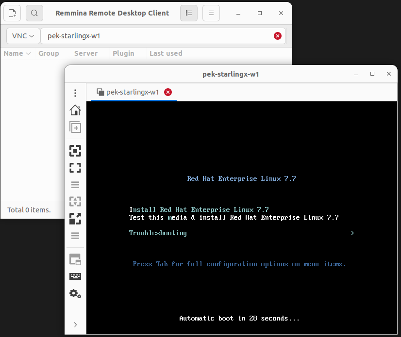
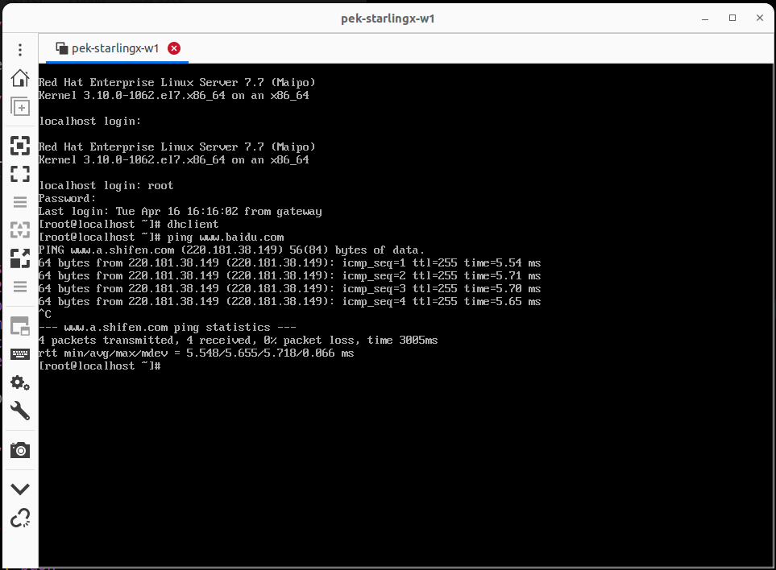

Install Ret Hat 7 server¶
Get the RHEL7¶
cp /net/pek-nas1/vol2/teamshare/isos/RedHat/RHEL7/RHEL7_Server/7.7/rhel-server-7.7-x86_64-dvd.iso .
Create Bootload Disk¶
dd if=/dev/zero of=rhel7.img bs=1G count=5
qemu-img convert -f raw -O qcow2 rhel7.img rhel7.qcow2
Install RHEL7¶
sudo qemu-system-x86_64 -cpu host -smp 2 \
-m 1024 -hda rhel7.qcow2 \
-cdrom rhel-server-7.7-x86_64-dvd.iso \
-boot d --enable-kvm -vga virtio -vnc :0
Here is the above file script
insall the rhel7 from remmina through VNC
Launch up RHEL7¶
sudo qemu-system-x86_64 -cpu host \
-smp 2 -m 1024 -hda rhel7.qcow2 \
--enable-kvm -vga virtio -vnc :0 \
-cdrom rhel-server-7.7-x86_64-dvd.iso \
-device e1000,netdev=net0 \
-netdev user,id=net0,hostfwd=tcp::5555-:22
Here is the above file script
Configure the Network¶
[root@localhost ~]dhclient
Get the IP address from dhcp server
Access VM via ssh¶
hliu4@pek-starlingx-w1:$ssh root@localhost -p 5555
root@localhost's password:
Last login: Tue Apr 16 17:01:56 2024
[root@localhost ~]#
Set up yum repository¶
Mount cdrom¶
[root@localhost ~]mkdir -p /media/cdrom
[root@localhost ~]mount /dev/cdrom /media/cdrom
or
[root@localhost ~]mkdir -p /media/cdrom
[root@localhost ~]mount /dev/sr0 /media/cdrom
Configure Repos¶
Copy the media.repo file from the root of the mounted directory to /etc/yum.repos.d/ and set the permissions to 0644 or another similar permissions set:
[root@localhost ~]cp /mnt/disc/media.repo /etc/yum.repos.d/
[root@localhost ~]chmod 644 /etc/yum.repos.d/media.repo
Edit the new repo file, changing the gpgcheck=0 setting to 1 and adding the following 3 lines
[root@localhost ~]# cat /etc/yum.repos.d/media.repo
[InstallMedia]
name=Red Hat Enterprise Linux 7.7
mediaid=1563892373.442998
metadata_expire=-1
gpgcheck=1
cost=500
baseurl=file:///media/cdrom/
gpgkey=file:///etc/pki/rpm-gpg/RPM-GPG-KEY-redhat-release
[root@localhost ~]#
Enable repos¶
[root@localhost ~]# yum clean all
[root@localhost ~]# yum repolist enabled
Testing¶
[root@localhost ~]# yum update
Loaded plugins: product-id, search-disabled-repos, subscription-manager
This system is not registered with an entitlement server. You can use subscription-manager to register.
No packages marked for update
[root@localhost ~]# yum install ctags
Loaded plugins: product-id, search-disabled-repos, subscription-manager
This system is not registered with an entitlement server. You can use subscription-manager to register.
Resolving Dependencies
--> Running transaction check
---> Package ctags.x86_64 0:5.8-13.el7 will be installed
--> Finished Dependency Resolution
Dependencies Resolved
==============================================================================
Package Arch Version Repository Size
==============================================================================
Installing:
ctags x86_64 5.8-13.el7 InstallMedia 155 k
Transaction Summary
==============================================================================
Install 1 Package
Total download size: 155 k
Installed size: 351 k
Is this ok [y/d/N]: